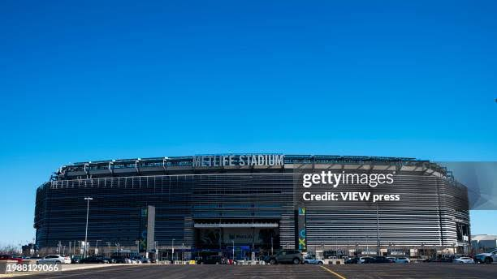
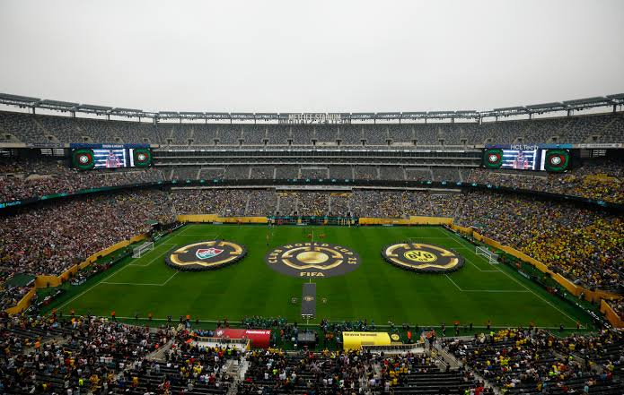
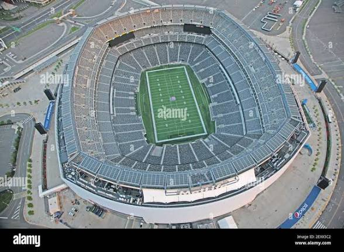

MetLife Stadium



New York City's World Cup venue is MetLife Stadium in East Rutherford, New Jersey, serving the wider New York metropolitan area.
The stadium is one of the biggest venues in the country and has the scale expected for major tournament matches.
Its location near one of the world's most famous cities makes it a marquee stop in the competition.